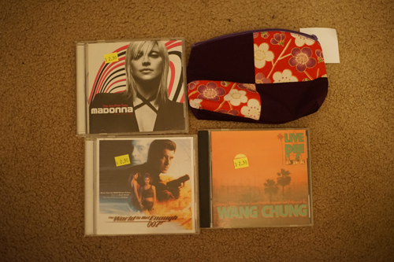

came across a nap club today. very cute!!
i checked out a pawn shop, st vinny's, and goodwill (again) today. pawn shop had almost nothing interesting, st vinny's sucked (as usual) but i found a couple things. i was just at goodwill yesterday but i didnt get to pick through the clothes as much as i would have liked so i finished that up today. im still praying to find some canon fd prime lenses. please please!
the jewelry counter at walmart was closed so i didn't get to make any terrible decisions today. my mom did say she is willing to try doing my doubles though. im not sure im going to branch out to cartilage anytime soon though
im glad i got git + neocities upload working on ryans laptop that i always use. it was quite a pain to upload each file individually. i highly recommend! the neocities upload in ruby does try to reupload each file though so it takes forever. its worth it to not worry about it though
if anyone was excited for an update on the lost wigs they were found a few hours later in the shinyfairy box under the cushion (why?!?!)
my mom says she doesnt want me to name my lieselotte chebyshev and then keeps making weird jokes about my (male) shinyfairy hana. that doll needs a name too tbh